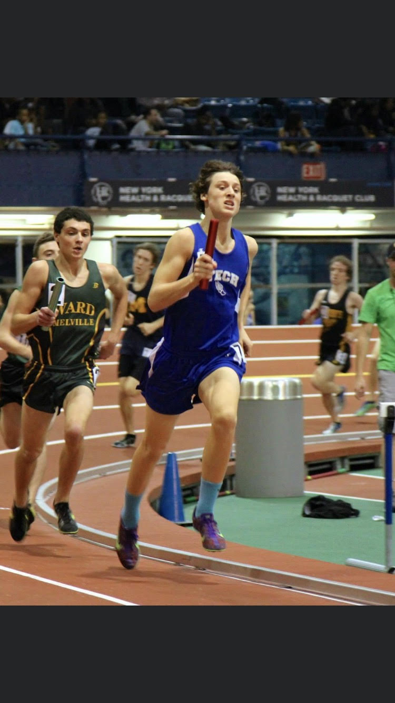

My name is Andrew Pokorny and I am 21 years old (born October 14 1998) from New York, New York.
I attended Brooklyn Technical High School in Brooklyn, New York
and graduated in 2016. There, I ran four years of cross country and track
and devleloped a huge interest in running- athletically and professionally.
I am currently a senior at Babson College and
ran my freshman year at the collegiate level.
My athletic accolades include:
Six time New York State Championship Qualifier
2x Mayors Cup Cross Country Champion (Individual& Team)
Personal bests: 2:00.78 (800), 2:35.50 (1000), 4:27.15 (Mile)
 1:59:40.2
1:59:40.2